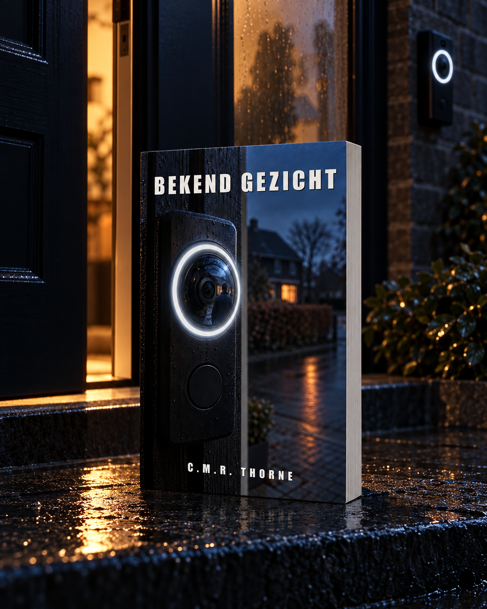

LOWLANDSPRESS
LOWLANDSPRESS

Bekend Gezicht
Een thriller
Waar te koop
Binnenkort verkrijgbaar
Reinier Klopper is tandarts in Zuiderwaard. Van half het dorp weet hij hoe het gebit erbij staat, en hij is er de man naar om dat gewoon werk te noemen. Op een gewone zaterdagochtend deelt zijn buurvrouw een clip van haar slimme deurbel in de wijk-app: er staat een man voor Reiniers eigen voordeur, en de app zet er een naam onder. Ferdinand. Zijn beste vriend van school, die al twintig jaar in Zweden woont.
Achttien buren hebben de clip al gezien als Reinier één ding zeker weet: de man op de stoep is Ferdinand niet. Waarom hij daar zo zeker van is, heeft hij eenendertig jaar aan niemand verteld. In de zomer van 1998 verdronk een klasgenoot in de Westeinderplassen, en Reinier was de jongen op het pad die alleen zei wat hij had gezien. Niet wat hij dacht.
Binnen twee weken kantelt het dorp op de verkeerde man, en dan ligt er opnieuw een dode in Reiniers eigen straat. Om te bewijzen wat er in 1998 werkelijk is gebeurd, moet hij hardop zeggen wat hij eenendertig jaar over zijn beste vriend heeft gedacht. En ontdekken dat een deurbel geen gezichten kent, alleen namen.
Een label is geen gezicht.
Productgegevens
- Uitgever
- Lowlands Press
- Taal
- Nederlands
- Pagina's (Paperback)
- 524
- Pagina's (Hardcover)
- 414
- Woorden
- 102.378
- ISBN (Paperback)
- 979-8164563288
Lees het begin
Het begin van het boek, zoals het in de winkel ook in te kijken is. Verder lezen kan bij de winkels hierboven.
Proloog
vertigo ring 4 · voordeur waterlelie 49 · 06/10/2029 09:02:57 beweging: persoon · zone 'stoep 47' · live beeld beschikbaar bekend gezicht herkend: ferdinand (vriend reinier) label sinds 21/12/2016 · overeenkomst 0,91 deurbel 49: niet ingedrukt · opname loopt tik om te bekijken · delen · corrigeren
Om twee minuten over negen gaf de telefoon op de keukentafel van Waterlelie negenenveertig drie tonen, oplopend, en zei daarna met een stem die van niemand was: bekend gezicht herkend. Daarna een naam.
Het regende. Het water liep in rechte banen langs het keukenraam en verzamelde zich onderin de sponning. Aan de tafel zat Herminia Klaver, zestig, in een grijs vest dat tot bovenaan was dichtgeknoopt, een leesbril laag op haar neus. Voor haar lag een tafelagenda open op de lopende week. Bij dinsdag stond wijkraad 20:00, en daaronder één regel in blauwe balpen, met een a die niet dichtging. Naast de agenda een mok koffie waar nog damp van afkwam. Naast de mok de telefoon, het scherm naar boven.
Ze legde de pen in de vouw van de agenda en pakte de telefoon op.
Op het scherm stond niet haar eigen stoep. De camera naast haar voordeur keek schuin opzij, over het lage hek en langs de haag, en nam de voordeur van nummer zevenenveertig mee in de hoek van het beeld. Die hoek had zij jaren terug in de app een eigen naam gegeven. In die hoek stond een man.
Herminia zette haar bril recht en tikte op het beeld. Het werd groot.
Een man in een blauwe regenjas, de capuchon half van zijn hoofd gezakt. Kaal op de kruin, lichtblond bij de slapen. Hij stond voor de deur van zevenenveertig en keek naar die deur, niet naar de camera die hem van opzij in beeld had. Om zijn hoofd tekende de app een dun wit vierkant dat met hem meebewoog. Onder het vierkant stond een regel tekst.
Ferdinand, vriend Reinier.
De man drukte op de bel van zevenenveertig. Eén keer. Achter het raampje naast de deur bleef het donker, en op de mat lag de ochtendkrant nog in zijn plastic hoes.
Hij wachtte. Hij drukte geen tweede keer.
Herminia tikte op delen. De app vroeg waarheen. Ze koos de groep die bovenaan stond, Waterlelie & omstreken, en typte met één duim, de bril nog op haar neus:
Reinier, staat je vriend Ferdinand voor je deur?
Ze drukte op verzenden. Haar vraag kwam bovenaan in de groep te staan, boven een bericht over een vuilcontainer die de wind op zijn kant had gelegd en een foto van een grijze kat die sinds donderdag niet thuis was gekomen. Onder de vraag verscheen een grijs vlak met een driehoekje erin: de clip, nog aan het laden.
Ze ging terug naar de deurbel-app.
Op de stoep keek de man op zijn horloge. Hij draaide zich half om, naar de camera toe, en de capuchon gleed nog iets verder van zijn hoofd. Het vierkant volgde zijn gezicht. De regel eronder veranderde niet. Toen liep hij de stoep af, langs het hek, en het beeld uit.
De app schreef persoon verlaat beeld, zette de lengte van de opname erbij en legde de clip bij de andere clips van die week. Onder de clip kwam een vraag in kleine letters te staan, Klopt deze herkenning?, met daarnaast ja en nee.
Herminia legde de telefoon op tafel, het scherm naar boven.
Ze stond op, liep door de gang naar de voorkamer en schoof de vitrage een hand opzij. De stoep van zevenenveertig was leeg. Het regende op het hek, op de krant in zijn hoes, op de tegels van de portiek, waar het water in de naden bleef staan. Op het fietspad langs de vijver liep niemand. Ze liet de vitrage terugvallen.
In de keuken ging ze weer zitten. Ze draaide de agenda een kwartslag naar zich toe, las wat er bij dinsdag stond en schreef er niets bij. Ze dronk van de koffie. Toen pakte ze de telefoon weer op en zette hem rechtop tegen de mok, met het scherm naar haar toe.
De wijk-app stond nog open. Onder haar vraag liep een teller.
Waterlelie & omstreken · gelezen door 18 · 09:04
Onder de teller verschenen duimpjes, het ene na het andere, van mensen die op een natte zaterdagochtend hun telefoon al in hun hand hadden. Niemand schreef iets terug.
Iemand zette er een hartje onder.
Hoofdstuk 1
De zaterdag begon met mist die niet weg wilde. Reinier zat op de klapstoel voor het huisje, beide handen om een mok koffie, en keek uit over het meertje dat de folder een vijver had genoemd en dat in dit weer eerder een moeras met wilgen was. Jip stond al een tijd met zijn hengel bij het water, ergens rechts, waar de takken laag hingen. Sien had haar boek op schoot en las niet. Ze keek naar hetzelfde water als Reinier, in de trui van hem waarvan hij had gedacht dat die verloren was, en ze had haar knieën opgetrokken tot onder de wol.
Roosje zat naast hem, in dezelfde stoel als hij maar dieper weggezakt. Ze had gezien dat hij ergens anders zat dan in die stoel; ze had het eerder gezien dan hij.
'Rein,' zei ze. 'Je hebt drie keer op je telefoon gekeken.'
'Herminia.'
'Wat wil ze?'
'Ze heeft iets gestuurd.'
Hij zei het zoals hij op het spreekuur zei dat een verstandskies eruit moest: rustig, met een stilte erachter die de ander een tel gaf om nog iets te vragen. Roosje vroeg niets. Hij haalde zijn telefoon uit de zak van zijn regenjas en opende de wijk-app, Waterlelie & omstreken. Het bericht stond bovenop. Achttien buren hadden het gelezen; onder de tekst stonden een paar duimpjes en één hartje.
Reinier, staat je vriend Ferdinand voor je deur?
Onder de vraag een korte clip, de thumbnail al ingevuld: de stoep van hun eigen huis, schuin van opzij. Reinier tikte de clip open. Het beeld schokte één keer bij het opstarten, en de app zette er zijn vaste regel onder, in een letter die niemand in de wijk ooit had uitgekozen. Vertigo Ring 4 · 06/10/2029 · 09:02:57 · voordeur waterlelie 49 · bekend gezicht: Ferdinand.
Er stond een man op de stoep. Hij droeg een blauwe regenjas met een capuchon die half was afgezakt. Hij keek naar de deur van Reiniers eigen huis, voorbij de haag, niet naar de deurbel van Herminia. Zijn gezicht kwam driekwart in beeld; zijn hoofd, kaal op de kruin en lichtblond bij de slapen, boog naar voren toen hij de bel indrukte. Er werd niet opengedaan. De man wachtte, drukte geen tweede keer, keek even op zijn horloge. Toen draaide hij zich half naar de camera. Op dat moment schoof de capuchon een stukje verder terug en werd de rand van een bril zichtbaar. Een dun montuur, rond model, de bovenrand iets zwaarder dan de onderrand.
De clip stopte.
Reinier keek naar het stille water voor hem. Jip haalde zijn lijn in en wierp opnieuw uit.
'Ferdinand?' zei Roosje. 'Die zit toch al twintig jaar in Zweden?'
'Die zit al twintig jaar in Zweden.'
'Wat doet hij dan voor onze deur?'
'Dat is hij niet.'
Roosje hield haar hoofd schuin, alsof ze de zin nog een keer wilde horen, in een andere toonsoort. Hij liet de telefoon in zijn schoot liggen, scherm omhoog, en corrigeerde niets.
'Herminia's app zegt dat hij het is,' zei Roosje.
'Herminia's app zegt dat dit gezicht een label draagt dat zij ooit heeft ingevoerd.'
'Het label Ferdinand.'
'Het label Ferdinand. Dat is dertien jaar oud.'
'En het gezicht op dat filmpje?'
Hij startte de clip opnieuw. De man draaide, de capuchon schoof, de bril kwam naar voren. Reinier zette het beeld stil op de tweede seconde en liet zijn vinger boven het scherm hangen, als om iets te wijzen dat er niet stond. Het gezicht bleef daar hangen, half in de mist van de opname. Het was het gezicht van iemand die op Ferdinand leek. Van iemand die zó op Ferdinand leek dat het weinige wat Reinier zich van Ferdinand herinnerde er moeiteloos overheen paste, en dat zei meer over zijn geheugen dan over dit gezicht.
'Iemand die op hem lijkt,' zei hij.
Roosje wachtte tot hij zou zeggen wie.
Hij zei het niet. Hij keek naar de bril op het stilgezette beeld en dacht, tegen zijn zin, iets terug wat hij lang niet had gedacht: een kaakvorm die hij als jongen nog niet kon benoemen omdat hij toen nog geen tandarts was, en een klasgenoot die op de laatste schooldag met andermans bril de kantine in was gekomen. Dezelfde ronde vorm. Dezelfde iets zwaardere bovenrand. Later, ergens rond de eeuwwisseling, had hij dat montuur nog eens gezien, op een foto bij een verjaardagskaart die door het huis van de Kloppers was gegaan en daarna was weggegooid.
'Rein.'
'Ik weet het niet zeker,' zei hij, en dat was waar. 'Ik weet wel dat het Ferdinand niet is.'
Hij drukte de telefoon uit en legde hem op de grond, tussen zijn schoenen. Hij dronk zijn koffie.
Bij het water riep Jip dat hij niets ving. Sien reageerde niet.
'Ik loop even mee,' zei Reinier, en hij stond op.
Hij liep achter zijn zoon langs de oever naar de wilgen. Het was verder dan hij vanaf de stoel had geschat en de grond was zachter. Jip wierp opnieuw uit; de dobber zakte weg tussen de blaadjes. Reinier hurkte naast hem op de oever.
'Papa,' zei Jip. 'Sien zei niks vanochtend.'
'Nee?'
'Niet tegen mij, niet tegen jou. Ze zei goedemorgen tegen mama en dat was het.'
'Sien is zeventien,' zei Reinier. 'Zeventien is een leeftijd waarop je niet altijd hoeft te praten.'
'Wanneer moet je dan wel praten?'
Reinier keek naar de dobber. 'Als iemand het vraagt.'
'Oh.'
Jip haalde de lijn binnen, verlegde zijn dobber een klein stuk en wierp opnieuw uit. Hij vond het antwoord blijkbaar genoeg. Reinier bleef nog even gehurkt zitten en keek hoe het water zich sloot boven het lood. Toen kwam hij overeind.
Op de terugweg naar de stoelen hield hij de telefoon los in zijn hand, zonder ernaar te kijken. Bij de deur van het huisje stond Sien, de trui nu om haar schouders geknoopt, het boek onder haar arm. Ze keek naar hem zonder iets in haar houding te veranderen.
'Papa,' zei ze.
'Mama zegt dat Herminia iets heeft gestuurd.'
'Ja.'
'Wat?'
'Een filmpje van iemand die voor onze deur stond.'
Sien knikte. Ze duwde met haar vlakke hand tegen de deurpost, alsof ze controleerde of het hout meegaf.
'Wie stond er dan voor de deur?'
'Iemand die op een oude vriend van mij leek.'
Ze knikte nog een keer, langzamer nu, en liep het huisje in zonder de deur achter zich dicht te doen.
Reinier ging weer op de klapstoel zitten. Roosje was overeind gekomen om verse koffie te halen en de mist was een halve meter opgetrokken; de wilgen hadden weer een onderkant. Hij pakte de telefoon, opende de clip opnieuw en zette hem stil op dezelfde plek als daarnet.
De bril. Rond, dun montuur, boven zwaarder dan onder.
De kaak die eronder zichtbaar was, breed, met een korte kin. De lichtblonde haartjes bij de slaap. Hij kende dat gezicht niet van gisteren en niet van vorig jaar. Hij kende het van de kantine van De Blauwe Poort, van de laatste schooldag van het vijfde jaar, toen vlak voor de klassenfoto brillen waren geruild omdat iemand dat een goede grap vond.
Eenendertig jaar geleden. Ferdinand had de rest van de middag met het montuur van een ander gelopen, en op de foto stond hij zonder zijn eigen bril, en de docent die de afdrukken uitdeelde had er hardop bij gezegd: Broeksma schrijf je met een d op het eind, jongens, niet met een t. Alsof de spelling het enige was wat er die dag rechtgezet moest worden.
Wie op die foto de geruilde bril droeg, links van Reinier, met een brede kaak en een korte kin, dat was Ferdinand niet geweest. Reinier had dat altijd geweten zoals je weet welke kies er in een mond ontbreekt: je ziet het meteen, en je zegt het pas als iemand ernaar vraagt.
Reinier legde de telefoon met het scherm omlaag op zijn dij. Hij dronk zijn koffie leeg en hield de mok in beide handen tot hij de warmte niet meer voelde. Bij het water wierp Jip opnieuw uit; het geluid van het lood kwam een tel later dan de kring in het water. In het huisje schoof Sien ergens een stoel over de vloer, één keer, en daarna was het daar stil.
Roosje kwam terug met de pot en schonk zijn mok vol zonder te vragen. Ze ging zitten, keek naar het meertje, keek toen opzij.
'Rein,' zei ze. 'Wie is het dan wel?'
Dat is Diederik.